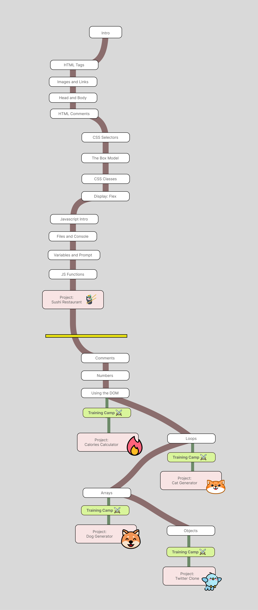

Todo está gratis en internet pero…
¿prefieres pasar años separando el grano de la paja
o prefieres programar ya?
Hay contenido gratis que sí es bueno,
el desafío es que está rodeado de toneladas de información inútil.
Intentas descifrar qué es programar realmente pero te cuesta encontrar la siguiente pieza para completar el puzzle.
Eso hace que caigas en el infierno de los tutoriales: Pasas más tiempo buscando qué aprender (y viendo tutoriales de lo mismo) que practicando y aprendiendo de verdad.
Igual que para aprender un idioma no empiezas leyendo todas las palabras del diccionario, sigues un método.
Para programar puedes navegar por
❌ Decenas de cursos inconexos
❌ Cientos de tutoriales incompletos
❌ Cero proyectos para practicar a tu nivel
O puedes seguir un plan que te hace avanzar sabiendo cual es el siguiente paso
✅ Tu vida será mucho más sencilla si tienes un roadmap que seguir.
✅ Tus habilidades aumentarán exponencialmente si practicas paso a paso.
✅ Tus posibilidades de ser contratado se disparan si tienes un porfolio con proyectos.
Me llamo Imanol
Soy Lead Engineer en una multinacional de telecomunicaciones europea (Gamma Telecom LTD).
Sin tener ningún título de programación (siendo autodidacta), buscando aqui y alla en Internet explicaciones incompletas o demasiado complicadas para mi nivel, fui aclarando ese mapa mental, esa pregunta que tenia “En que consiste programar?” “Que necesito para ser programador?” Y con mucho esfuerzo, y pasando por varias entrevistas técnicas (Algunas de 2 horas hablando de diseño de sistemas), conseguí mi primer trabajo.
En aquel momento estaba contento de haber conseguido mi primer objetivo, ser contratado como programador. Al poco empecé a necesitar más, quería saber más, hacer cosas más grandes.
Era hora de convertirme en un profesional, y seguir mi carrera en un país de habla inglesa.
No fue fácil. Tuve que enfrentarme a situaciones que dan miedo. Hablar en inglés, tener entrevistas técnicas en inglés, pasar por muchos retos. El dinero que tenía se me estaba acabando. Tras mucho esfuerzo conseguí mi objetivo, me convertí en ingeniero de software.
Han pasado años desde aquel día y desde entonces no he parado de aprender. Durante todo este tiempo he tenido esta sensación dentro de mí de que realmente hay una forma mejor de explicar cómo programar. Siento que tengo que sacar esta propuesta y mostrárselo al resto. Las cosas pueden ser más fáciles. A los principiantes hay que hablarles como principiantes.
Y aquí me tienes
Estaba contento por haber conseguido el primer objetivo, pero aún así tuve que pasar penurias y seguir mi aventura en otro país solo.
Son ya 7 años donde he estado separando el grano de la paja. Toda una época sospechando que algo me faltaba pero no daba en el clavo. Poco a poco fui encontrando respuestas hasta que pude acumular todas las que necesitaba para salir del infierno de los tutoriales.
Durante todo este desafío no me detuve porque
«Todas las cosas buenas están al otro lado del miedo»
Illia Topuria.
También he visto como otros no lo lograron, vi a otros programadores abandonar derrotados. Era gente completamente válida (aquí mas que talento se necesita constancia) pero se frustraron y no siguieron.
Por eso he construido un roadmap que te facilita la vida
y como estoy convencido de ello el inicio de la formación te lo dejo abierto (sin registro siquiera) para que lo juzgues por ti mismo.
Tienes ya disponible:
- 36 lecciones (texto + animaciones) empezando por lo básico y yendo paso a paso
- 3 proyectos para que practiques mientras aprendes
- 50 ejercicios de entrenamiento para que subas tu nivel. DESDE CERO y yendo PASO A PASO
Con la formación completa aprendes de cero a profesional JavaScript, HTML y CSS.

La formación completa incluye:
- 64 lecciones (texto + animaciones) de HTML, CSS y JavaScript
- 8 proyectos
- 200 ejercicios de entrenamiento
Decide salir del infierno de los tutoriales y únete a
los que quieren programar.
✅ Este curso es para ti si
- Estás aprendiendo a programar y has caído en el infierno de los tutoriales
- Nunca has programado (irás paso a paso desde lo más básico)
- Sabes programar en Javascript pero no acabas de comprender cosas como el DOM o las promesas
- Quieres ser web dev
- Quieres trabajar como programador junior en una empresa
❌ Este curso no es para ti si
- Ya eres programador con varios años de experiencia LABORAL
- Quieres aprender a usar frameworks
- Quieres un curso teórico sin ningún proyecto práctico
FAQ
¿Para trabajar de programador necesito un título?
No. Yo no lo tengo y soy Lead Engineer.
El propio Elon Musk ha dicho en entrevistas que contrata sin comprobar si la gente tiene el título. Y él contrata a ingenieros para fabricar cohetes.
Es caro 250€ para un curso de JS
Esta es una formación completa de Web Dev (HTML, CSS y JS). Si tienes dudas sobre si te va a resultar útil consulta primero el contenido gratuito y juzga tú mismo
¿Necesito formación previa?
No, puedes acceder si nunca has programado. Va desde lo más básico hasta nivel avanzado
¿Necesito saber de matemáticas para programar?
No. Esto es un mito extendido del sector. Solo necesitas saber sumar, restar, multiplicar y dividir.
¿Vale cualquier ejercicio para practicar?
Practicar practicas con todo lo que hagas, pero la forma óptima de aprender es con ejercicios graduales y construyendo un portfolio de proyectos
¿Tengo acceso de por vida?
Sí, es lifetime access
¿Tiene soporte?
La formación está planteada de la forma más clara y concisa para acompañarte en tu proceso de aprendizaje
Seguramente las posibles dudas que tengas se resuelven en las propias explicaciones. Aún así si tienes alguna duda puedes escribirme por mail
Respondo solo dudas concretas de lecciones concretas, no dudas generales de programación
¿Hay garantía de devolución?
No hay reembolso. Si estás dudando si la formación es para ti mira primero el contenido gratuito y decide si quieres formar parte de la academia
¿Es tarde para que aprenda a programar?
- Por edad no: Tengo un compañero de trabajo que tiene 70 y sigue programando (es todo un crack)
- Por época tampoco: En un mundo cada vez más tecnológico hace falta que haya más programadores. Para crear cosas nuevas y mantener las existentes
La IA va a quitarle el trabajo a los programadores
La realidad no es esta, lleva años el boom de la IA y las empresas siguen contratando.
La IA te ayuda como programador pero es una herramienta más, no es independiente. Si no sabes programar no sabrás cómo usarla para que te ayude
Índice de la formación completa
- 🌱 HTML Beginners
- Tags
- Creating files
- Text
- Links
- 🎍 HTML Advanced
- Tables
- Video
- Semantic HTML
- Documentation
- 🪴 JS Beginners
- Variables
- Bucles
- Arrays
- DOM
- Objetos
- 🌳 JS Advanced
- Hoisting
- Scope
- Promesas
- Async await
- Browser
- 🌱 CSS Beginners
- Fonts
- Colors
- Box Model
- Classes
- 🎍 CSS Advanced
- Flex
- Grid
- Animations
- Media queries